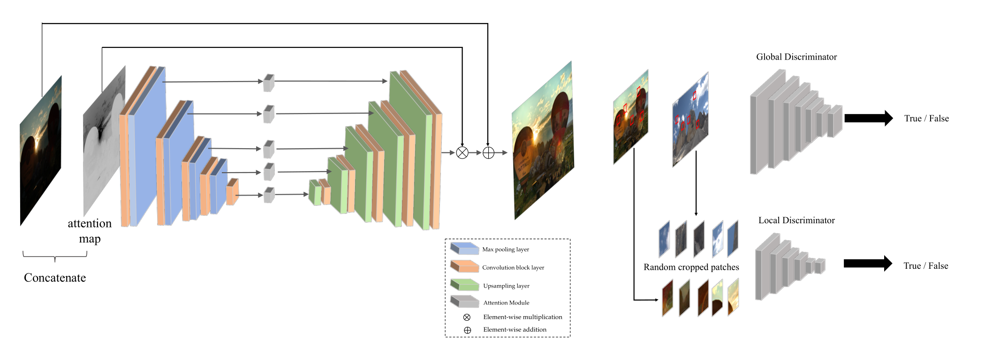

EnlightenGAN论文详解
论文是2019年IEEE的EnlightenGAN: Deep Light Enhancement without Paired Supervision.这篇论文是低光增强领域无监督学习的开山之作。
论文链接如下：arxiv.org/pdf/1906.06972.pdf
出发点
出发点1：从监督学习的缺点入手。
it is very difficult or even impractical to simultaneously capture corrupted and ground truth images of the same visual scene.
指出在低光增强领域，监督学习的第一个不足之处——在同一个场景下同时获得亮度正常的图片和低光图片是很难而且不现实的。
synthesizing corrupted images from clean images could sometimes help, but such synthesized results are usually not photo-realistic enough.
监督学习有时候会使用合成的低光图片进行训练，也就是拍摄正常光照的图片后，经过模糊、加噪音等，合成低光图片，作为一对数据进行训练。作者指出这种方式并不足够真实。算是第二个不足之处。
我的理解是低光图片的合成是人为控制的，因此合成的低光程度不一样得到的效果也不同。
specifically for the low-light enhancement problem, there may be no unique or well-defined high-light ground truth given a low-light image.
作者指出低光领域监督学习的第三个不足之处，在于低光图片的ground-truth并不唯一。某个场景晚上的图片，它的ground-truth可以是该场景在白天的任何时候。也就是说，为一张低光图片配对一个绝对的正常光照图片是没有必要的。
出发点2：从拍摄所得低光图片的特点入手。
Taking into account the above issues, our overarching goal is to enhance a low-light photo with spatially varying light conditions and over/under-exposure artifacts, while the paired training data is unavailable.
作者认为，低光图片的增强需要考虑到图片光照条件的空间变化。也就是说，一张图片拍摄后，不同地方的光照不同，那么进行低光增强时，不同位置的增强的程度也不同，如果一张图片给所有地方增强程度相同，就有可能出现过度曝光而失真的情况。
创新点
创新点1：在低光增强中第一次引入双重判别器。
We first propose a dual- discriminator to balance global and local low-light enhancement.
创新点2：引入一个自特征保留损失。
Further, owing to the absence of ground-truth supervision, a self-regularized perceptual loss is proposed to constrain the feature distance between the low-light input image and its enhanced version, which is subsequently adopted both locally and globally together with the adversarial loss for training EnlightenGAN.
创新点3：开发原始低光输入的Attention Map引导生成。
We also propose to exploit the illumination information of the low-light input as a self-regularized attentional map in each level of deep features to regularize the unsupervised learning.
模型

框架：作者使用U-Net作为Generator，在其中对每层加入了注意力map以引导生成。使用了两个Discriminator，均为PatchGAN设计。一个是Global Discriminator，一个是Local Discriminator。
By extracting multi-level features from different depth layers, U-Net pre- serves rich texture information and synthesizes high quality images using multi-scale context information.
PatchGAN是一种设计，最早出现于CircleGAN模型的判别器中。它是原来GAN的一种延申与升级。PatchGAN与感受野有关，具体在Patch GAN的理解_patchgan判别器-CSDN博客这篇博客中有详述。
Generator详解：输入的低光RGB图片取出其照明通道I，然后归一化为[0， 1]，然后利用1-I（元素差异）作为该层的attention map。然后这层的低光RGB图片经过卷积与最大值汇聚得到下一层的RGB图片。然后此RGB图片取出其照明通道I，这个照明通道同样地归一化为[0， 1]，利用1-I（元素差异）作为该层的attention map。这一层的RGB图像继续通过卷积与最大值汇聚得到下一层的RGB图片，以此类推。直到RGB图片只经过卷积得到最后一层的RGB图片，然后经过该层的attention map（元素乘法），然后通过上采样层Upsampling Layer和卷积层得到上一层的RGB图片，以此类推，最顶层的RGB图片经过上采样与卷积，与最顶层的attention map元素乘法，再与残差连接的原始低光图片相加，得到增强光亮后的输出。
值得一提的是，模型中的Upsampling Layer并非简单的一个转置卷积，而是一个双线性上采样层，以减轻伪影。
Discriminator详解：我的理解是，Global Discriminator对整张输出图片和原始低光图片判别，Local Discriminator在正常低光图片和增强图片分别随机地裁剪局部块进行判别。两个Discriminator都进行判断输出图片来自真实图片还是增强图片。
设计及其损失
1.双重判别器（Dual Discriminator）及其损失
we observe that an image-level vanilla discriminator often fails on spatially-varying light images; if the input image has some local area that needs to be enhanced differently from other parts, e.g., a small bright region in an overall dark background, the global image discriminator alone is often unable to provide the desired adaptivity.
拍摄的图片的光照是存在空间变化的，如果有一些部位需要特别地增强，而有一些部位相对于其他部位又很亮，那么单纯用一个全局的判别器总是做的很失败。所以作者引入全局-局部判别器，以解决局部过度增强以及局部增强不足的情况。
对于全局判别器的损失，首先基于Relativistic discriminator的损失结构，标准的判别器损失为：
然后将$\sigma$换为LSGAN中的损失函数，最后得到全局判别器D和全局生成器G的损失：
对于局部判别器的损失，直接引用LSGAN的对抗性损失：
2.自特征保留损失（Self Feature Preserving Loss）
感知损失：Johnson等人提出感知损失，通常的做法是通过预训练的VGG去抽取输出图片和真实标签图片的特征，然后限制这两组特征的距离。
基于感知损失，作者提供了无监督学习版的感知损失：并非限制输出与真实标签特征的距离，而是限制输入与输出特征的距离。
In our unpaired setting, we propose to instead constrain the VGG-feature distance between the input low-light and its enhanced normal-light output.
损失函数如下：
符号描述如下：
where $\large{I^L}$denotes the input low-light image and $\large{G(I^L)}$ denotes the generator’s enhanced output. $\phi_{i, j}$denotes the feature map extracted from a VGG-16 model pre-trained on ImageNet. i represents its i-th max pooling, and j represents its j-th convolutional layer after i-th max pooling layer. $\large{W_{i,j}}$and $\large{H_{i,j}}$ are the dimensions of the extracted feature maps. By default we choose i = 5, j = 1.
下面这段话说明，自特征保留损失作用于全局判别器，也作用于局部判别器：
For our local discriminator, the cropped local patches from input and output images are also regularized by a similarly defined self feature preserving loss.
总损失
自正则Attention Map
在前面的模型中，已经解释了Attention Map的机理：
We take the illumination channel I of the input RGB image, normalize it to [0,1], and then use 1−I (element-wise difference) as our self-regularized attention map. We then resize the attention map to fit each feature map and multiply it with all intermediate feature maps as well as the output image.
每一层的Attention Map要Resize为与该层RGB特征图片形状一致，这样才能进行元素乘法。
作者指出，Attention Map也是一个自正则化的手段，而且是该工作中非常关键的一步。
本文毕